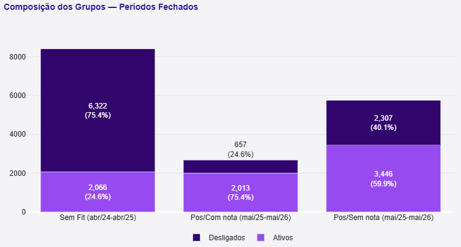
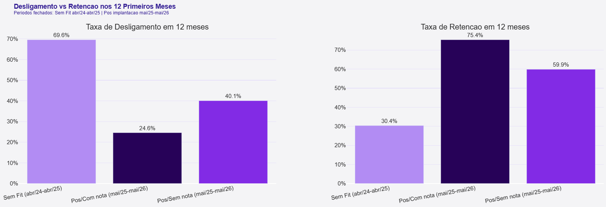
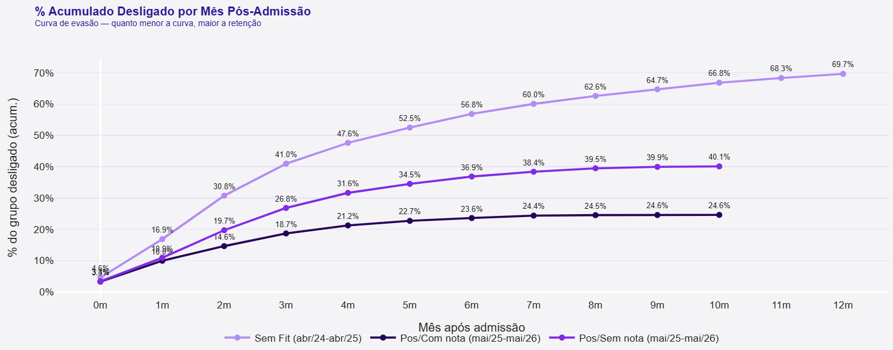
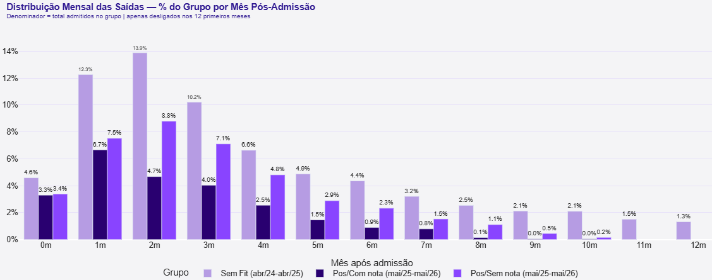
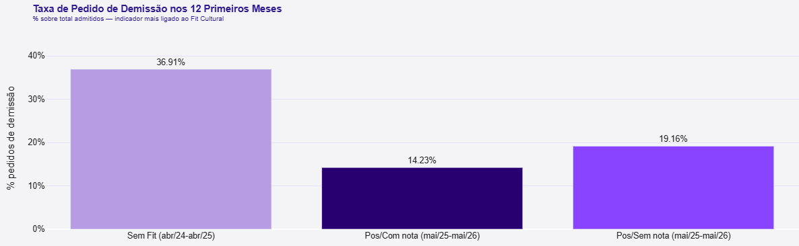
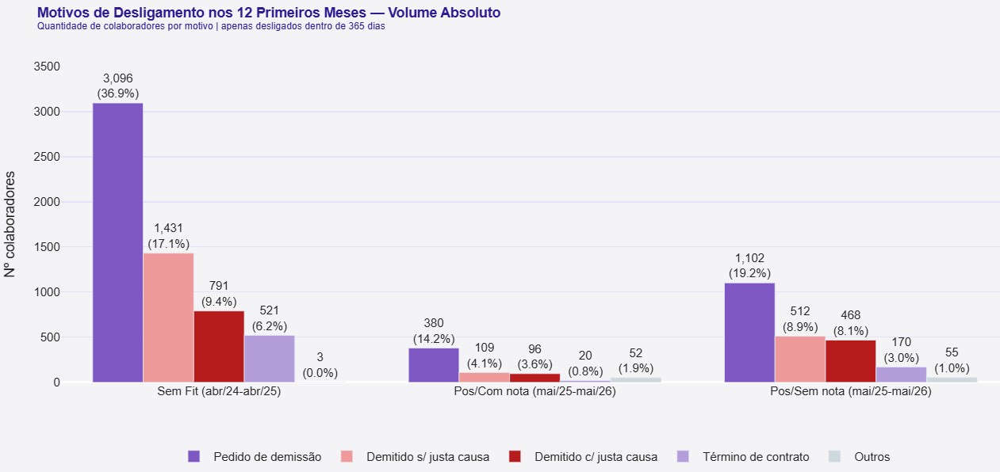

Resultado
Desligamento nos 12 primeiros meses de contrato, em janelas de admissão equivalentes.
ConfidencialidadeO cliente não é identificado. Esta página descreve o método e os resultados agregados; nomes, unidades e recortes que permitiriam identificar a empresa foram removidos.
Roteiro
01Contexto e objetivo
Em maio de 2025, a empresa passou a usar uma avaliação de Fit Cultural como critério complementar nas contratações. A ferramenta mede o alinhamento do candidato com o perfil cultural da empresa e gera um score que orienta, sem substituir, a decisão do recrutador.
Um ano depois veio a pergunta natural: isso melhorou a retenção? O objetivo da análise foi quantificar o impacto sobre os 12 primeiros meses de contrato — a janela em que a rotatividade se concentra e em que o alinhamento cultural teria mais chance de aparecer.
A base cobre abr/2024 a mai/2026, com mais de 16 mil admissões distribuídas entre os grupos comparados.
02O viés que invalida a comparação óbvia
Esta é a decisão que sustenta toda a análise.
O caminho natural seria comparar Pré (todos os colaboradores admitidos antes de mai/2025) com Pós (todos os admitidos depois). Esse recorte é enganoso, e o motivo é simples: o grupo Pré acumula gente com 1, 5 ou 10 anos de casa, enquanto o grupo Pós tem no máximo 13 meses de empresa.
Viés de exposiçãoQuem está há mais tempo na empresa teve mais tempo para se desligar. Comparar grupos com tempos de observação diferentes mede a diferença de exposição, não o efeito da intervenção — e sempre favorece o grupo mais novo.
A correção: restringir os dois lados a janelas de admissão fechadas de 13 meses, de modo que o tempo máximo de observação seja idêntico. Assim, quando os números divergem, a divergência não vem do relógio.

03Os três grupos
Dois grupos responderiam a pergunta pela metade. O terceiro é o que separa efeito de coincidência.
Sem Fit
admitidos abr/24 – abr/25 · 8.388 pessoasO score é ignorado mesmo quando existe, porque o processo seletivo ainda não o usava como critério.
Com Fit
admitidos mai/25 – mai/26 · 2.670 pessoasCandidatos avaliados pelo Fit Cultural e contratados já sob o novo critério.
Sem nota
admitidos mai/25 – mai/26 · 5.753 pessoasMesmo período pós-implantação, mas sem score — a cobertura não era total. Isola o efeito do Fit do efeito do próprio período.
O terceiro grupo é o mais importante do desenho. Sem ele, qualquer melhora poderia ser atribuída a outra coisa que mudou em 2025 — mercado de trabalho, política salarial, mudança na operação. Como esse grupo viveu exatamente o mesmo período e a única diferença é não ter passado pela avaliação, ele responde: "e se nada tivesse mudado no processo seletivo?"
04A métrica
Desligamento em 12 mesesPara cada pessoa: houve desligamento dentro de
365 dias da admissão e dentro da janela observada do grupo? Quem não aparece como
desligado nessa janela conta como retido naquela safra.
taxa = desligados em 12m ÷ total de admitidos no grupo
O denominador é o total de admitidos no período do grupo — não o headcount ativo. Essa escolha garante que grupos de tamanhos muito diferentes (8.388 contra 2.670 pessoas) continuem comparáveis: a taxa não depende de quantos sobraram.
A regra da janela e o que ela implica
Como o desligamento só é contado dentro da janela do grupo, quem foi admitido perto do fim de uma janela teve pouco tempo de observação e entra como retido, mesmo que venha a sair pouco depois. Isso é censura à direita — e é a razão de fundo para as janelas terem a mesma duração nos três grupos.
Por que isso não quebra a comparaçãoCom janelas de 13 meses em todos os grupos, o efeito é simétrico: cada grupo tem a mesma proporção de gente pouco observada, na mesma posição da janela. O viés não favorece nenhum lado. O que ele afeta é o nível das taxas — todas subestimam o desligamento verdadeiro em 12 meses — e não a diferença entre elas, que é o objeto da análise.
05Achados

| Grupo | Admitidos | Desligados 12m | Taxa | IC 95% |
|---|---|---|---|---|
| Sem Fit (abr/24 – abr/25) | 8.388 | 5.838 | 69,6% | 68,6 – 70,6% |
| Com Fit (mai/25 – mai/26) | 2.670 | 657 | 24,6% | 23,0 – 26,3% |
| Sem nota (mai/25 – mai/26) | 5.753 | 2.307 | 40,1% | 38,8 – 41,4% |
Com amostras nessa ordem de grandeza, os intervalos de confiança ficam estreitos — no máximo ±1,6 p.p. Vale registrar por que os intervalos aparecem aqui e o p-valor não: com milhares de observações, qualquer diferença sai significativa, então o teste de hipótese não distingue nada. O intervalo responde a pergunta útil, que é de quanto é a diferença e com que precisão.
Decompondo os 45 pontos
Contra o grupo Sem Fit, a queda é de 45,0 p.p. (69,6% → 24,6%). É o número de manchete, mas ele compara períodos diferentes — e o controle interno permite separar o que é efeito da ferramenta do que é efeito do período:
| Contraste | Diferença | IC 95% | Risco relativo |
|---|---|---|---|
| Efeito do período Sem nota vs Sem Fit |
−29,5 p.p. | −31,1 a −27,9 | 0,58 |
| Efeito do Fit Cultural Com Fit vs Sem nota, mesmo período |
−15,5 p.p. | −17,5 a −13,4 | 0,61 |
| Total observado Com Fit vs Sem Fit |
−45,0 p.p. | −46,9 a −43,1 | 0,35 |
A conta fecha: 29,5 + 15,5 = 45,0. E a leitura incômoda é que o período explica
quase o dobro da ferramenta. Alguma coisa mudou em 2025 — mercado, política salarial,
operação — que já derrubaria o turnover de qualquer jeito. Atribuir os 45 pontos ao Fit Cultural seria
inflar o resultado em cerca de três vezes.
O que sobra para a ferramenta, ainda assim, é sólido: 15,5 p.p. com intervalo inteiramente negativo (−17,5 a −13,4), um risco 39% menor de desligamento em 12 meses entre pessoas que viveram o mesmo contexto e se separam só por terem passado pela avaliação. Em termos operacionais, é 1 saída evitada a cada ~6,5 contratações feitas com Fit.
Quando as pessoas saem


As duas visões contam a mesma história por ângulos diferentes: a evasão se concentra nos primeiros três meses em todos os grupos. No grupo Sem Fit, o pico do 2º mês sozinho leva 13,9% de toda a coorte. No grupo Com Fit o mesmo pico é de 4,7%. A diferença não está só no total — está em quando as pessoas desistem, o que aponta diretamente para o onboarding.
06Por que as pessoas saem
Contar quantos saíram não basta. O motivo é o que liga o resultado à causa.
Os desligamentos se dividem em dois tipos: os de iniciativa da empresa (demissão com ou sem justa causa, término de contrato) e as saídas voluntárias — o pedido de demissão.
O teste decisivoO Fit Cultural atua sobre a decisão do colaborador: quem se identifica com o ambiente tem menos motivo para pedir para sair. Se a ferramenta funciona, o efeito tem que aparecer no pedido de demissão — não numa queda genérica do total.

Na comparação de manchete o resultado é forte: 14,2% [13,0 – 15,6] no grupo Com Fit contra 36,9% [35,9 – 37,9] no Sem Fit. Mas o teste que interessa é de novo o de dentro do período, contra o controle interno em 19,2% [18,2 – 20,2] — e aí a margem cai para 4,9 p.p. [3,2 – 6,6].
| Efeito do Fit no mesmo período | Diferença | Risco relativo | Redução |
|---|---|---|---|
| Desligamento total em 12m | −15,5 p.p. | 0,61 [0,57–0,66] | 39% |
| Pedido de demissão em 12m | −4,9 p.p. | 0,74 [0,67–0,83] | 26% |
A hipótese não se confirma inteiramenteSe o Fit Cultural agisse sobretudo sobre a saída voluntária, a redução relativa deveria ser maior no pedido de demissão do que no desligamento total. É o contrário: 26% contra 39%, com intervalos que mal se tocam. A vantagem do grupo avaliado existe e é consistente, mas está distribuída por todos os motivos de saída, não concentrada no canal que a teoria previa.
Isso não invalida o resultado — reduzir o desligamento em 12 meses em 39% continua sendo o achado principal. Mas muda a explicação: o efeito não parece ser puramente de alinhamento cultural. Uma hipótese alternativa é que passar pela avaliação esteja correlacionado com outra coisa — o tipo de vaga, o recrutador, o canal de origem, o rigor do processo naquele fluxo. Separar isso exige controlar por essas variáveis, o que fica como próximo passo.

Os percentuais são calculados sobre o total de admitidos do grupo, não sobre os desligados. Sobre os desligados, um grupo que retém mais teria automaticamente percentuais maiores em cada motivo — a comparação ficaria sem sentido.
07Limitações e recomendações
O que esta análise não prova
- As taxas subestimam o desligamento real, nos três grupos. Quem entra no fim de qualquer uma das janelas tem pouco tempo observado e conta como retido — inclusive no grupo Sem Fit, onde alguém admitido em mar/2025 que saiu em jun/2025 caiu fora da janela abr/24–abr/25. Como o efeito é simétrico, ele não distorce a comparação entre os grupos, mas os valores absolutos são um piso, não a taxa verdadeira de 12 meses.
- Grupos não controlados por cargo, faixa etária ou região — variáveis que também movem a rotatividade e que não foram isoladas.
- Não é um experimento. A atribuição ao grupo Com Fit não foi aleatória: quem foi avaliado pode diferir sistematicamente de quem não foi. O controle interno reduz esse risco, mas não o elimina.
- Cobertura parcial da ferramenta no período pós-implantação — 2.670 avaliados contra 5.753 não avaliados.
- Qualidade do último mês. A base recebida traz um volume de desligamentos anormalmente baixo no mês final, provavelmente por fechamento incompleto. Por isso a análise se apoia nas taxas por coorte e não na série mensal.
O caminho natural para tratar a censura de frente é a análise de sobrevivência (Kaplan-Meier, e um modelo de Cox para ajustar por cargo e região). Ela usa cada pessoa pelo tempo que de fato foi observada, em vez de classificá-la como retida por falta de janela — o que devolveria as taxas em nível, não só a diferença entre grupos.
Recomendações entregues
- Ampliar a cobertura da avaliação. O grupo sem nota, com mais que o dobro do tamanho do avaliado, mostra que a maior parte das contratações ainda não passa pelo Fit — o que limita o alcance do efeito.
- Priorizar as áreas de maior turnover, concentrando a avaliação onde o diferencial de retenção foi maior.
- Atacar o onboarding precoce. A curva de evasão mostra que o risco se concentra nos primeiros 90 dias; rituais de acompanhamento nesse período rendem mais do que ajustes na triagem.
- Testar o score como preditor individual, e não só como marcador de grupo. Se a correlação entre faixa de score e retenção se confirmar, faixas mínimas viram critério de triagem para cargos com histórico de evasão precoce.
- Reavaliar em 6 meses. Com 18 meses de dados pós-implantação, as estimativas ficam mais estáveis e a análise por faixa de score ganha volume para conclusões mais firmes.
O que a análise entrega bem
- Comparação sem viés de exposição — janelas de admissão fechadas e de mesma duração nos três grupos, o que também torna a censura no fim da janela simétrica entre eles.
- Grupo de controle no mesmo período, que separa o efeito da ferramenta do efeito do contexto.
- Hipótese testável antes de olhar o dado — o efeito tinha que aparecer no pedido de demissão, e apareceu.
- Denominadores explícitos, escolhidos para manter grupos de tamanhos diferentes comparáveis.
- Limitações declaradas junto com o resultado, não em nota de rodapé.